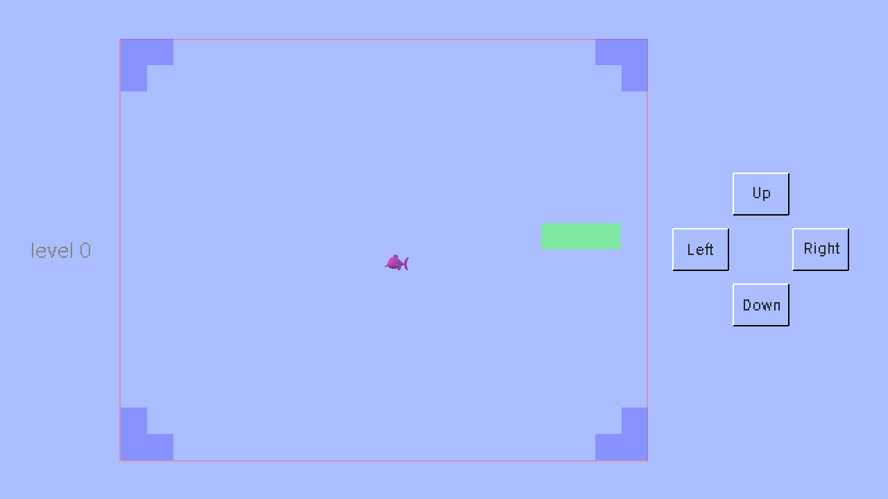

贪吃蛇游戏首先出现在诺基亚黑白显示屏手机上。在这个游戏里，一条移动的蛇不停地吃食物，每次吃到食物，蛇就会长长一点。当蛇撞到墙或者它自己，这个游戏就结束了。这个游戏逻辑很简单，也没有什么复杂的图像，所以实现起来相对容易。
在此示例中，蛇的身体由绿色方块组成。食物是粉红色的鱼。墙壁是蓝色的块。当蛇吃鱼时，会发出声音，玩家会获得一些积分。如果玩家获得足够的积分，游戏将进入下一个级别。当蛇撞到墙壁或自身时，将播放不同的声音，游戏结束。
这个游戏的示例代码及其辅助文件已压缩在软件包中。点击此处以下载压缩的游戏示例包。解压缩它，然后将game_examples文件夹复制到JMFPLang.jar文件旁边的scripts文件夹中，如下图所示。

游戏的脚本代码源文件（即hungry_snake.mfps）位于game_examples文件夹的hungry_snake子文件夹中。它的辅助文件（即food.png，eatfood.wav和hitwall.wav）也位于同一文件夹中。要启动该示例，只需启动JMFPLang.jar文件，然后在命令行中运行gdi_test::game_test::hungry_snake::run()。由于hungry_snake.mfps的第一条语句告诉MFP解释器该游戏的入口函数（如下所示），因此玩家也可以转至JMFPLang.jar所在的文件夹，然后通过键入java -jar JMFPLang.jar -f scripts\game_examples\hungry_snake\hungry_snake.mfps命令在Windows Command / Powershell或Linux bash中运行脚本。用户甚至可以通过为mfps文件设置默认打开的应用程序来使脚本可自行执行。有关使用@execution_entry标注的详细信息，只需在MFP命令行中键入help @execution_entry即可。
@execution_entry gdi_test::game_test::hungry_snake::run
请注意，由于MFP不支持静态或全局变量，因此在游戏中，函数将用于返回一些常量设置值，例如窗口大小，颜色，更新间隔等。下面的代码就是一个例子。
// width of button
// 按钮的宽度
function BUTTONWIDTH()
return 80
endf
蛇的活动区域是一个大网格。网格的每个单元都是一个块。食物总是占据一个块。蛇的身体和墙由块组成。蛇每一步向前移动一个块，直到它撞到墙或它自己或被玩家操纵改变方向。
玩家使用鼠标，手指或按下按钮控制蛇的移动。由于游戏需要对按钮的状态变化做出反应，因此在if分支中添加了POINTER_DOWN事件处理程序，如下面的代码片段所示。
variable giEvent = pull_event(DISPLAYSURF)
if giEvent == Null
// no event to handle // 没有输入事件
break
elseif get_event_type_name(giEvent) == "GDI_CLOSE"
// quit // 游戏退出事件
return -1
elseif get_event_type(giEvent) == 106 // mouse or finger slided // 鼠标或手指滑动事件
// x1 and y1 are the coordinate when sliding starts, x2 and y2 are the coordinate when sliding finishes
// x1和y1是滑动开始时的坐标位置，x2和y2是滑动结束时的坐标位置
variable x1 = get_event_info(giEvent, "last_x")
variable y1 = get_event_info(giEvent, "last_y")
variable x2 = get_event_info(giEvent, "x")
variable y2 = get_event_info(giEvent, "y")
... ...
elseif get_event_type_name(giEvent) == "POINTER_DOWN" // mouse or finger tapped down // 鼠标或手指按下事件
... ...
xHit = get_event_info(giEvent, "x")
yHit = get_event_info(giEvent, "y")
... ...
endif
在这个游戏中，一些绘画元素，例如蛇和食物总是在移动，而其他绘画元素，例如墙和按钮上的文字，则是静态的。显然，在每次更新中在屏幕上一个接一个地绘制静态元素很慢，并且浪费了计算时间。由于这些静态元素永远不会覆盖在移动元素之上，因此，一种更聪明的方法是通过调用open_image_display函数创建背景图像。此函数返回类似于open_screen_display函数返回的句柄。然后使用与在屏幕上绘图函数相同的函数在背景图像中绘制所有静态元素。绘制完所有静态元素后，调用函数set_display_bgrnd_image，然后在每次屏幕更新时，整个背景图像将会被自动绘制在屏幕上。
开发人员可能会注意到，在脚本中，一个叫做scalingRatio的变量应用于与背景图像有关的大小和位置的所有计算。这是因为，为了加速屏幕更新，背景图像的大小与屏幕不同。较小的背景图像尺寸意味着较快地绘制背景图案，但是屏幕上显示的图像质量会更差。因此缩放比例默认设置为0.5，这意味着背景图像仅是实际屏幕尺寸的一半。
以下代码展示了如何使用背景图像。
// open an empty image display // 打开一个空的图像显示窗口（image display） variable boardImageDisplay = open_image_display(null) ... ...// draw static elements, e.g. walls, here //在这里绘制静态元素，比如墙。 // get snapshot of the image display, note that we update the image display before taking snapshot // 取回图像显示窗口的截图。注意在获取截图前，先将图像显示窗口更新。 variable boardImage = get_display_snapshot(boardImageDisplay, true) // shutdown image display // 关闭图像显示窗口 shutdown_display(boardImageDisplay) // set the snapshot of the image display to be game's display window's background image. // note that the mode is stretching the background image to fit the whole game's display window // as the snapshot image is smaller than the game's display window. // 将上述图像显示窗口的截屏设置为游戏真实显示窗口的背景图案。注意背景图案的设置模式是1，也就是缩放背景图案让它和 // 游戏真实显示窗口大小一致。 set_display_bgrnd_image(DISPLAYSURF, boardImage, 1)
为了在按钮上应用3D效果，在游戏脚本中专门编写了一个函数来绘制按钮，如下所示。其基本原理是，按钮的边缘有两种颜色，即白色和黑色。当不按下按钮时，左边缘和上边缘为白色，而右边缘和下边缘为黑色。按下按钮时，左和上将变为黑色，而右和下将变为白色。
// draw button's border on screen display. There are two states, pushed or unpushed. If the button is not pushed, left
// and top edges have front light color while right and bottom edges have back light color. Otherwise, left and top have
// back light color while right and bottom have front light color.
// 在显示窗口绘制按钮边界。注意按钮有两种状态：按下和没有按下。按钮在按下状态时，左上边界是背光色，右下边界是向光色；反之，左上是向光色右下背光色。
function drawButtonBorderOnScreen(info, display, topLeft, width, height, isPushed, btnFrontColor, btnBackColor)
variable color1 = btnFrontColor, color2 = btnBackColor
if isPushed // is button pushed? // 按钮按下了没有？
color1 = btnBackColor // back light color // 背光色
color2 = btnFrontColor // front light color // 向光色
endif
draw_line(info, display, topLeft, [topLeft[0], topLeft[1] + height], color1, 2) // left border // 左边界
draw_line(info, display, topLeft, [topLeft[0] + width, topLeft[1]], color1, 2) // top border // 上边界
draw_line(info, display, [topLeft[0], topLeft[1] + height], [topLeft[0] + width, topLeft[1] + height], color2, 2) // bottom border // 下边界
draw_line(info, display, [topLeft[0] + width, topLeft[1]], [topLeft[0] + width, topLeft[1] + height], color2, 2) // right border // 右边界
endf
为了告诉玩家各个按钮的用处，需要在其上标明文字。函数draw_text能够在选定的位置上绘制文本。该函数有七个参数，它们是owner_info，display，text_string，origin_place，color，text_style和painting_extra_info。owner_info也就是所有者信息和display也就是显示窗口句柄已在MFP游戏开发基础中进行了说明。text_string可以是使用"\n"作为换行符的多行字符串，例如"Hello\nworld"。origin_place是文本字符串的原点。请注意，它不一定是文本矩形的左上角或左下角。为了找出文本字符串的原点，开发人员需要调用函数calculate_text_origin来返回它。参数color和text_style定义文本颜色和文本字体。最后一个参数painting_extra_info告诉绘画事件调度程序应该选择哪种porterduff模式进行绘制。此参数是可选的，开发人员只需要使用其默认值（也就是忽略它）即可。有关函数draw_text和calculate_text_origin的详细信息，只需在MFP命令行框中键入help后跟函数名称即可。
// draw button text which must be horizontally and vertically center aligned with the rectangular button border
// 绘制按钮的文字。这写文字必须在水平和垂直方向都位于长方形按钮的中心
function drawButtonText(display, topLeft, width, height, text, isPushed, scalingRatio)
variable btnTxtFnt = BUTTONTEXTFONT()
variable textOrigin = calculate_text_origin(display, text, topLeft, width, height, 0, 0, btnTxtFnt)
draw_text("static element", display, text, textOrigin * scalingRatio, TEXTCOLOR(), btnTxtFnt * scalingRatio)
endf
借助MFP语言对Android和安装有JAVA的PC平台的双重支持，本游戏既可以在安装有JAVA的PC上运行，也可以在安卓设备上以应用或者独立脚本的方式运行。以下是该游戏在两个不同的平台上运行的截屏。上面的屏幕截屏是在Windows+JVM平台上的运行效果，下面的屏幕截屏是在Android平台上的运行效果。
